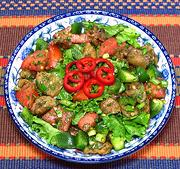

|
Fried Eggplant SaladTurkmenistan - Gowrulan Badamjanly Salat | ||||
| Makes: Effort: Sched: DoAhead: |
2 # ** 1-1/2 hr Part |
This flavorful salad offers an unusual contrast in textures. The dressing has no oil or salt, as these are provided by the fried eggplant. Caution: the eggplants can be a real problem, so read Note-4 carefully. | |||
|
|
1-1/2 1 3 1-1/4 3 7 3 2 2 1/2 ------ 1 2 |
# T T # lrg oz T T t --- cl T |
Eggplants (1) Salt Oil (2) Tomatoes Lettuce Leaves Bell Pepper Scallions Dill, fresh Parsley, flat Chili Flake (3) -- Dressing Garlic Lemon Juice |
This recipe will make 5 to 6 salad size servings. Make - (1-1/2 hr - 25 min work)
|